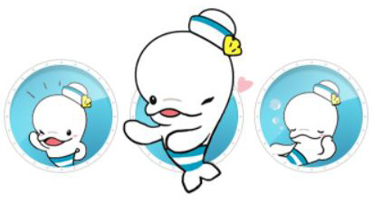
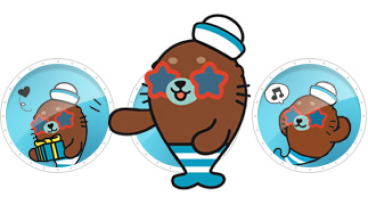
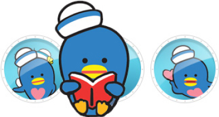
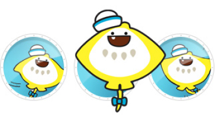
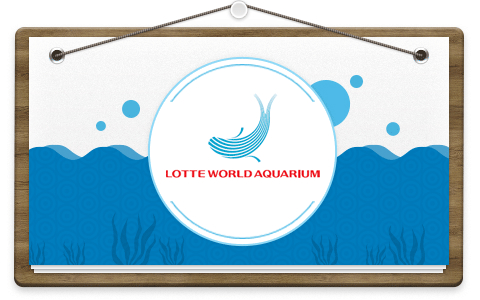
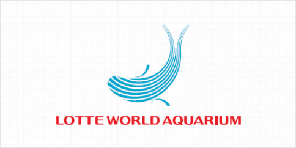
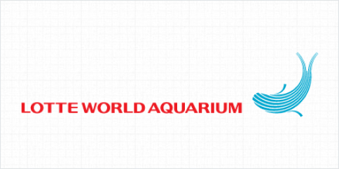

Home
>
아쿠아리움
>
홍보자료
홍보자료
Character & BI
개성 강한 네 친구와 함께 롯데월드 아쿠아리움으로 떠나보아요 !
- 
- 루루
- 활기차고 호기심 가득한 아기벨루가 루루는 롯데월드 아쿠아리움의 마스코트입니다. 이야기하고 장난치는 것을 좋아해서 누구든지 금방 친구가 되고, 언제나 웃는 얼굴, 밝은 모습으로 즐거운 분위기를 만들어준답니다. 모두들 루루의 사랑스런 매력에 푹 빠질거에요.
- 
- 레오
- 재주많은 바다사자 레오는 스스로를 슈퍼스타라고 여기며 뽐내기 좋아하는 유쾌한 친구에요. 항상 친구들에게 둘러싸여 주목을 받고싶어 한답니다. 넘치는 끼와 재능으로 롯데월드 아쿠아리움의 인기를 독차지하겠다는 큰 포부를 가지고 있어요.
- 
- 핑핑
- 사랑을 나누어주는 하트펭귄은 아는 것도 많고 다른 친구들을 배려하는 마음이 큰 착한 성격의 소유자에요. 무표정한 것 같지만 그 속에는 따뜻한 마음을 가지고 있답니다.
- 
- 가비
- 수줍음을 잘 타고 겁이 많은 가오리는 친해지기까지 시간이 조금 걸리지만, 친해지고 나서 보면 가끔 엉뚱한 모습을 보여주기도 하는 재미있는 친구에요. 하트펭귄과는 어릴때부터의 단짝이랍니다.
Brand Identity

롯데월드 아쿠아리움 BI 디자인은 바닷속 해양 동물의 움직임과 파도의 에너지를 직관적으로 표현하였으며,
모험적인(Adventurous), 활기찬 (Lively), 창의적인 (Imaginative), 즐거운 (Enjoyable)
이라는 주요 브랜드 가치를 함축하고 있습니다.
심볼마크 적용규정
 